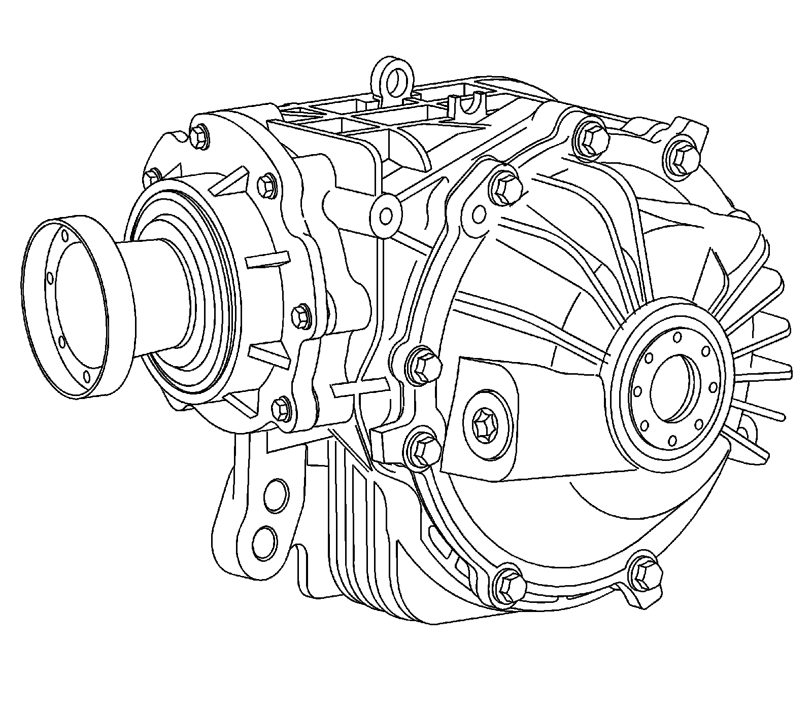

Front Drive Axle
Front Drive Axle Description and Operation
Front Drive Axle Description and Operation:

The differential housing, side cover and pinion housing are constructed of cast aluminum. The internal components incorporate a hypoid gear set, ring and pinion, carrier assembly and pinion housing assembly. The pinion is supported in a pinion housing by tapered roller bearings. The pinion is positioned forward of the ring gear centerline. All models have a 7 5/8 inch ring gear.
The differential assembly is available in 2 gear ratios. The 3.23 ratio axle is used in V8 applications. The 3.91 ratio is used in V6 applications.